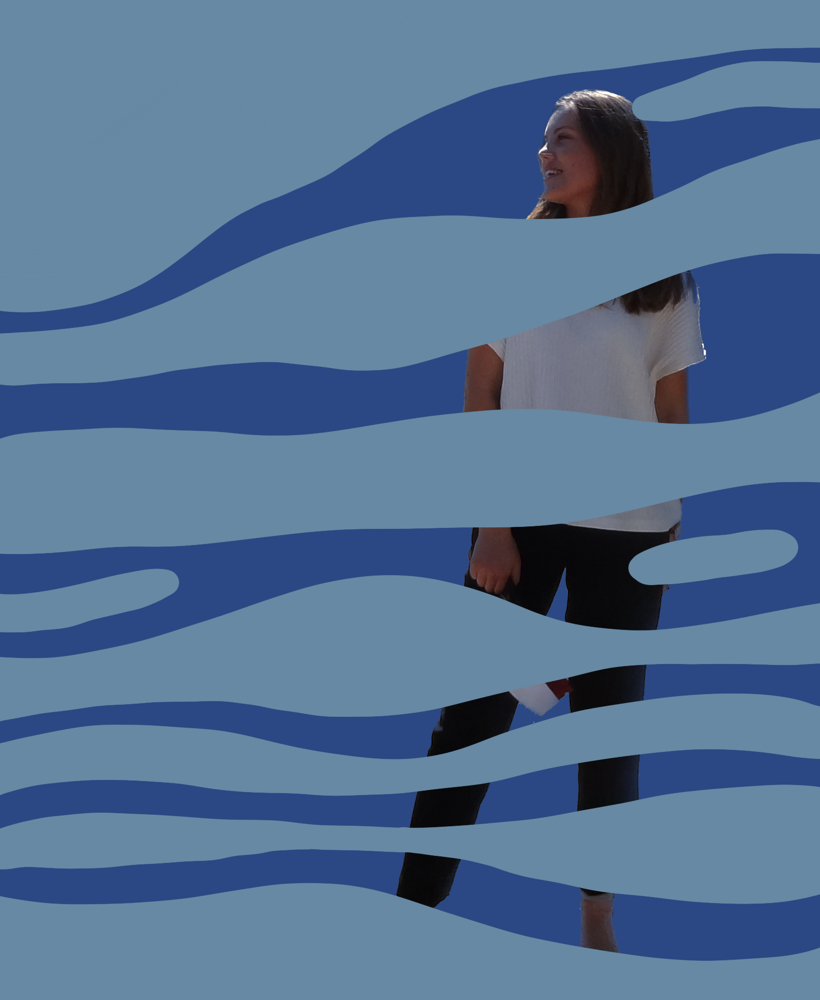

About me

Hello, I'm Eva
I’m 24 years old, living in Aarhus and currently studying on my 6th semester of Digital Design, BA. I play football, like going for a dip in the ocean and love spending time with family and friends.I’m interested in how we interact with digital artefacts, whether it be together or alone. Learning about the culture, aesthetics, and everything else surrounding the digital world is only one of many plusses, studying digital design.
Currently I’m working on my bachelor-project. I’m writing about how eyetracking can be used as a method for evaluating, to increase the knowledge about why users act like they do on different interfaces. My project includes implementing eyetracking-libraries into my own code, conducting usability tests and a lot of data analysis.
My role
I really enjoy working in groups and I tend to take on different roles when working in groups. I enjoy both the social aspect of groups, but also the availability of constant feedback. I'm of the conviction that more brains equal a better result. When making our semester-project last semester, my role was somewhat technical programming a game and being a part of all the overall graphical decisions of the interface. Though, when writing my bachelor on 5th semester, I choose to work alone. I did this, as I didn't want to compromise with the topic that I would explore. This was a revelation for me to work alone, especially for such a big project. I'm really proud of the end result, and I did like the independency I had on this project - only taking the paths that I thougt was interesting.
You are always welcome to contact me! Hope this
portfolio will give you an insight as to who I am and what projects I've worked with as
a digital designer. If you wish to get my CV or other informations please don't hesitate
to write me.
--- With love, Eva
Contact
- Mail: es.evasoerensen@gmail.com
- AU-mail: 202008018@post.au.dk
- Phone: +45 26 17 53 86